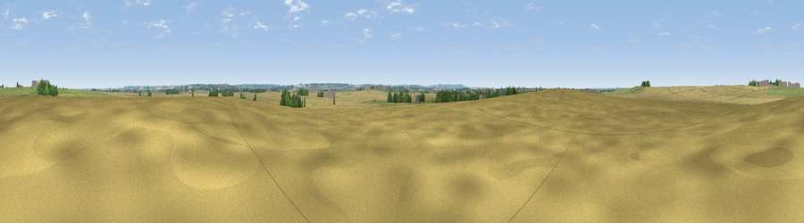

Viewpoint near Westborough
#39498 in England · top 72% of its area beats it · near WestboroughWhere it is
The exact computed spot (SK 85463 45289). Click the marker for map links.
The view, rendered

A 360° render of this exact spot computed from the terrain model, tree cover and land cover — summer colours, afternoon light, calibrated against photographs of famous viewpoints. Real trees, hedges and buildings will differ in detail.
The panorama
Grey silhouette: terrain skyline in each direction (720 bearings, Earth curvature and refraction included). Dashed green: skyline with trees (+15 m) and buildings (+8 m) as obstacles. Blue strip: how far the ground is visible on each bearing.
Where the view opens
Wedge length = distance to the farthest visible ground on that bearing (vegetation-aware). Rings at 10, 25 and 50 km.
What fills the view
71% cropland · 21% grassland · 6% woodland · 2% built-up
Angular shares of the visible panorama (visual magnitude), not map area. Landscape diversity 0.35 (0–1 Shannon).
Key numbers
More beautiful places nearby
The staircase of upgrades: each row has a higher view potential than everything closer. Driving times are estimates from straight-line distance, calibrated against real road routing — check an actual route before setting out.
| Place | Direction | Drive | Score |
|---|---|---|---|
| Viewpoint near Dry Doddington | NNW · 1 km | ~4 min | 46.5 |
| Viewpoint near Fernwood | NW · 6 km | ~13 min | 52.2 |
| Viewpoint near Great Gonerby | SE · 7 km | ~15 min | 52.5 |
| Viewpoint near Great Gonerby | SE · 7 km | ~15 min | 62.0 |
| Viewpoint near Belvoir | SSW · 12 km | ~23 min | 70.8 |
| Viewpoint near Woodhouse Eaves | SW · 46 km | ~66 min | 77.7 |
| Viewpoint near Mow Cop | W · 100 km | ~125 min | 78.9 |
| Viewpoint near Mow Cop | W · 100 km | ~125 min | 80.2 |
52.99811, -0.72804 · source: osm peak · position refined by local search. Computed location — check access rights before visiting.